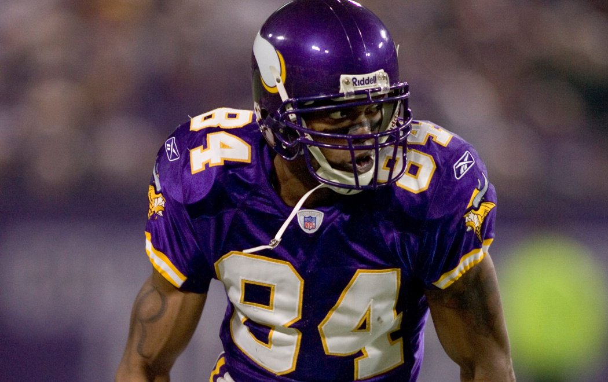

One of the greatest wide receivers of all time, Randy Moss was drafted by the Minnesota Vikings, leading to a long and successful career with the team. Randy was very tall, at 6 feet 4 inches tall, and had lightning speed that would propel him past defenders every week. One historic game during Moss's rookie season, he was thrown 3 passes, and caught all 3. What was impressive about this game however, is all 3 attempts went for a touch down. Moss drew up 161 yards in the first half alone, putting 21 points on the board for Minnesota, giving him a legendary name in the NFL for the years to come.
Randy Moss didn't spend his whole career in Minnesota however. He was first traded to the Oakland Raiders, where he spent 2 seasons playing in black and white. Then in 2007, he was traded to the New England Patriots. He was apart of the historic 18-1 team that lost in the Super Bowl to the New York Giants. He stayed with Tom Brady for 4 years, until having a small stent back in Minnesota, followed by the Tennessee Titans. 2011 Moss did not play, but he came back for a full season with the San Francisco 49ers before finally retiring in 2012.